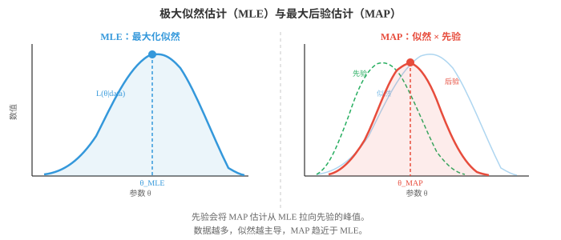
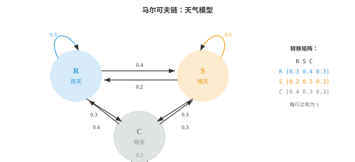
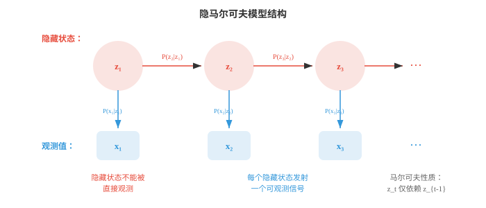

贝叶斯方法与序列模型（Bayesian Methods and Sequential Models）¶
贝叶斯方法将先验信念与观测数据结合，得到模型参数的后验分布。本节介绍最大似然估计、MAP 估计、共轭先验、贝叶斯推断、隐马尔可夫模型和 EM 算法。这些技术支撑着垃圾邮件过滤器、语言模型和不确定性感知 ML。
- 到目前为止，我们描述了分布和计算概率的方法。现在处理 ML 的核心问题：给定观测数据，如何找到模型的最佳参数？
大白话
模型结构确定后，还要决定参数取什么值最合理。MLE、MAP 和完整贝叶斯只是处理这件事的三种不同深度。
- 最大似然估计（Maximum Likelihood Estimation，MLE）直接回答这个问题：选择使观测数据最可能出现的参数值。
大白话
MLE 问的是：哪组参数最能解释已经看到的数据，就选哪组，不额外加入先入为主的偏好。
- 形式化地，给定数据 \(D = \{x_1, x_2, \ldots, x_n\}\) 和参数为 \(\theta\) 的模型，似然函数（likelihood function）为：
大白话
似然把数据固定，把参数当作变量，比较不同参数会让这份数据显得多合理。
- 这个乘积假定数据点独立同分布，即 i.i.d.。MLE 估计为：
大白话
独立同分布假设让每个数据点的概率可以相乘。现实数据若有强相关或来自不同群体，这个简化需要谨慎使用。
- 实践中通常最大化对数似然（log-likelihood），因为对数将乘积变为和，并避免数值下溢：
大白话
很多小概率连乘会小到计算机记不住；取对数后变成求和，既稳定又便于求导优化。
- 由于 \(\log\) 单调递增，最大化 \(\ell(\theta)\) 的 \(\theta\) 也最大化 \(L(\theta)\)。
大白话
对数会改变数值大小但不改变谁大谁小，所以找对数似然最高点和找原似然最高点是同一件事。
- 抛硬币示例：抛硬币 10 次，得到 7 次正面。硬币偏差 \(p\)，即正面概率，的 MLE 是什么？
大白话
已经观察到 7/10 的正面，MLE 会寻找最容易产生这个观测结果的硬币偏差。
- 每次抛掷都服从 Bernoulli(\(p\))，因此 10 次中出现 7 次正面的似然为：
大白话
公式把“哪七次是正面”的排列数和每种排列的概率合起来，得到参数 p 下观测到七正三反的可能性。
- 取对数并求导：\(\frac{d\ell}{dp} = \frac{7}{p} - \frac{3}{1-p} = 0\)，得到 \(\hat{p}_{\text{MLE}} = 7/10 = 0.7\)。
大白话
让似然曲线的斜率变成 0，就找到了它的峰顶。这里峰顶恰好是样本中正面的比例。
- MLE 直观且简单。10 次中有 7 次正面，最可能的偏差就是 0.7。但若 10 次均为正面，MLE 会给出 \(\hat{p} = 1\)，即硬币永远正面；仅凭 10 个观测，这显得过度自信。
大白话
MLE 完全相信有限数据。样本很少时，一串偶然极端结果会把估计推到 0 或 1 这类过于绝对的位置。
- 最大后验估计（Maximum A Posteriori，MAP）通过加入先验信念修正此问题。MAP 不只最大化似然，而是最大化后验：
大白话
MAP 在数据解释能力之外，再要求参数不要偏离原先合理范围太远，因此小样本下通常比 MLE 稳健。
- 分母中的 \(P(D)\) 被略去，因为它与 \(\theta\) 无关，不影响 argmax。
大白话
比较哪一个参数最好时，所有参数都要除同一个常数，排名不会改变，所以可以暂时忽略它。
- 先验 \(P(\theta)\) 编码了看到数据前对 \(\theta\) 的信念。若对硬币偏差使用 Beta(2, 2) 先验，表示温和地认为硬币大致公平，MAP 估计不再只是正面比例，而会被拉向 0.5。
大白话
Beta(2,2) 像在真正抛硬币前先放入少量“正反各一次”的虚拟经验，防止十次观测就把硬币判成绝对偏。

- 对 Beta(\(\alpha\), \(\beta\)) 先验，观察到 \(h\) 次正面和 \(t\) 次反面后，后验为 Beta(\(\alpha + h\), \(\beta + t\))，MAP 估计为：
大白话
贝叶斯更新在这个模型中只需给两个参数分别加上观察到的正面和反面次数，计算非常直接。
- 对本例的 Beta(2,2) 先验、7 次正面、3 次反面：\(\hat{p}_{\text{MAP}} = \frac{2 + 7 - 1}{2 + 2 + 10 - 2} = \frac{8}{12} = 0.667\)。
大白话
先验把 0.7 轻轻往 0.5 拉回，因此 MAP 为 0.667；数据越多，先验的这点拉力越小。
- 与 MLE 的 0.7 相比，MAP 的 0.667 被拉向 0.5。先验充当正则化。在 ML 中，L2 正则化，即权重衰减，恰好等价于对权重采用高斯先验的 MAP 估计。
大白话
正则化本质上是在说“除非数据强烈要求，否则参数不要太极端”。L2 权重衰减就是这种偏好的数学表达。
- 完整贝叶斯推断（Full Bayesian inference）比 MAP 更进一步。它不寻找单个最优 \(\theta\)，而是维护整个后验分布 \(P(\theta | D)\)。这不仅给出点估计，还提供不确定性度量。
大白话
完整贝叶斯不只给一个答案，还保留哪些参数仍可能、各有多大可能性，因此能诚实表达“我们还不确定多少”。
- 对具有 Beta(2,2) 先验、7 次正面、3 次反面的硬币，完整后验为 Beta(9, 5)。其均值为 \(9/14 \approx 0.643\)，分散程度表示我们的置信程度。数据越多，后验越窄。
大白话
后验曲线的中心给出合理偏差范围，宽度表示证据还不够确定。增加抛掷次数会让曲线集中起来。
- 三种方法形成一个连续谱：
大白话
三者并非谁绝对更好，而是在计算成本、先验信息和不确定性表达之间作不同取舍。
-
MLE：没有先验，只使用数据。速度快，但数据少时可能过拟合。
大白话
MLE 最省事，只让数据说话，但小数据里的偶然噪声也会被当成规律。
-
MAP：带先验正则化的点估计，增加稳健性。
大白话
MAP 给一个点答案，同时让先验约束不合理的极端参数，是实践中常见的折中。
-
完整贝叶斯：完整后验分布，信息最丰富，但通常计算昂贵。
大白话
完整贝叶斯保留最多信息，却要处理整条参数分布，在复杂模型中往往需要采样或近似算法。
- 马尔可夫链（Markov chains）建模序列：下一个状态只依赖当前状态，不依赖全部历史。这种“无记忆性”称为马尔可夫性质（Markov property）：
大白话
马尔可夫链把漫长历史压缩成当前状态。只要知道现在，就假设更早发生什么不再额外影响下一步。
- 可以用天气理解它。明天天气取决于今天天气，而不取决于上周天气，这是一种简化，却出奇有用。
大白话
今天阴雨已经间接包含了近期气候信息，所以模型不用记住每天历史，也能给出合理的明天预测。
- 马尔可夫链具有有限状态（states）集合和一个转移矩阵（transition matrix） \(T\)。元素 \(T_{ij}\) 给出从状态 \(i\) 转到状态 \(j\) 的概率，每一行之和为 1。
大白话
状态是系统可能处在的类别，转移矩阵是从每个类别出发下一步会去哪的概率表；每一行必须把所有去向概率加满 1。

- 对上方天气示例，转移矩阵为：
大白话
矩阵每一行列出当前天气下明天各种天气的概率；行内数字加起来为 1，表示所有去向已完整覆盖。
- 若今天下雨，状态向量为 \(\mathbf{s}_0 = [1, 0, 0]\)，明天天气的概率分布为 \(\mathbf{s}_1 = \mathbf{s}_0 T = [0.3, 0.4, 0.3]\)。后天天气为 \(\mathbf{s}_2 = \mathbf{s}_0 T^2\)。这使用了第 1 章的矩阵乘法。
大白话
状态向量像当前天气的概率配方。每乘一次转移矩阵就把概率推进一天，连续乘可预测更远未来。
- 许多马尔可夫链会收敛到平稳分布（stationary distribution） \(\pi\)，满足 \(\pi T = \pi\)。无论从何处开始，经过足够步数后，链都会稳定到 \(\pi\)。这是 MCMC，即马尔可夫链蒙特卡洛，的基础，它是贝叶斯 ML 中广泛使用的抽样技术。
大白话
平稳分布是长期运行后各状态出现的稳定比例。MCMC 借助这种长期比例，从难以直接取样的分布中获得样本。
- 隐马尔可夫模型（Hidden Markov Models，HMMs）在马尔可夫链上增加间接层。真实状态是隐藏的，即不可观测，而每个时间步隐藏状态都会发射一个可观测信号。
大白话
HMM 假设真正的状态看不见，只能看见它留下的线索。我们通过线索反推隐藏状态如何随时间变化。

- HMM 有三个组成部分：
大白话
HMM 需要规定状态如何转移、每种状态会产生什么观测，以及序列从哪里开始。
-
转移概率（transition probabilities） \(P(z_t | z_{t-1})\)：隐藏状态如何演化，即马尔可夫链。
大白话
转移概率描述隐藏状态从昨天到今天怎样变化，例如雨天继续下雨的可能性。
-
发射概率（emission probabilities） \(P(x_t | z_t)\)：各隐藏状态产生何种可观测输出。
大白话
发射概率连接看不见的原因和看得见的信号，例如雨天时朋友带伞的机会。
-
初始分布（initial distribution） \(P(z_1)\)：起始隐藏状态的概率。
大白话
初始分布给出第一天还没有任何历史信息时，各个隐藏状态各有多可能。
- 雨伞示例：假设你不能直接看到天气，但能观察朋友是否带伞。隐藏状态为 {雨天、晴天}，观测为 {带伞、不带伞}。
大白话
带伞不是天气本身，只是一条有噪声的证据：晴天也有人带伞，雨天也可能有人没带。
- 转移概率：\(P(\text{Rainy}|\text{Rainy}) = 0.7\)、\(P(\text{Sunny}|\text{Rainy}) = 0.3\)、\(P(\text{Rainy}|\text{Sunny}) = 0.4\)、\(P(\text{Sunny}|\text{Sunny}) = 0.6\)。
大白话
这些数描述天气自身的惯性：今天下雨时明天仍下雨较常见，但状态并不是永远不变。
- 发射概率：\(P(\text{Umbrella}|\text{Rainy}) = 0.9\)、\(P(\text{No umbrella}|\text{Rainy}) = 0.1\)、\(P(\text{Umbrella}|\text{Sunny}) = 0.2\)、\(P(\text{No umbrella}|\text{Sunny}) = 0.8\)。
大白话
看到伞会让雨天更可信，但不能百分之百确认，因为晴天也有 20% 的人带伞。
- HMM 的关键问题：
大白话
面对一串观测，HMM 既可以问最可能的状态路径，也可以问整串观测有多可能，或反过来学习模型参数。
-
解码（decoding）：给定观测，最可能的隐藏状态序列是什么？用维特比算法（Viterbi algorithm）解决。
大白话
解码不逐天独立猜，而是在所有完整路径中找总体概率最大的那条隐藏状态路线。
-
求值（evaluation）：观测序列的概率是多少？用前向算法（Forward algorithm）解决。
大白话
求值把所有可能的隐藏路径概率加起来，衡量模型生成当前观测序列有多合理。
-
学习（learning）：给定观测，最佳模型参数是什么？用Baum-Welch 算法解决，它是期望最大化的实例。
大白话
学习是在隐藏状态看不见的前提下，根据观测反过来估计转移规律和发射规律。
- 维特比推导：假设观测到 [带伞、带伞、不带伞]，并希望找出最可能的天气序列。
大白话
维特比算法每一天、每个候选状态都只保留到达它的最好路径，不必枚举全部指数级路径。
- 从初始概率开始。设 \(P(R) = 0.5\)、\(P(S) = 0.5\)。
大白话
在还没看到第一把伞前，先假设雨天和晴天机会相同，作为动态规划的起点。
- 第 1 天，观测带伞：
大白话
第一日没有前一天可转移，只需把初始状态概率乘上在该状态下看到雨伞的概率。
-
\(V_1(R) = P(R) \cdot P(U|R) = 0.5 \times 0.9 = 0.45\)。
大白话
雨天且带伞的联合概率较高，因此第一天雨天暂时领先。
-
\(V_1(S) = P(S) \cdot P(U|S) = 0.5 \times 0.2 = 0.10\)。
大白话
晴天也可能带伞，但概率低得多，所以这条路径分数较低。
- 第 2 天，观测带伞：
大白话
第二天到每个状态时，只比较从前一天所有状态转来的路径，保留其中分数最高者，再乘当天观测概率。
-
\(V_2(R) = \max(V_1(R) \cdot P(R|R), V_1(S) \cdot P(R|S)) \cdot P(U|R)\)。
大白话
要在第二天到达雨天，比较“雨转雨”和“晴转雨”两条路，选择更可能的前缀。
-
\(= \max(0.45 \times 0.7, 0.10 \times 0.4) \times 0.9 = \max(0.315, 0.04) \times 0.9 = 0.2835\)。
大白话
前一天雨天后继续下雨远比从晴天转雨更可能，因此保留雨天延续这条路。
-
\(V_2(S) = \max(V_1(R) \cdot P(S|R), V_1(S) \cdot P(S|S)) \cdot P(U|S)\)。
大白话
同样计算到晴天的最佳路径，但晴天带伞的发射概率很低，最终分数也低。
-
\(= \max(0.45 \times 0.3, 0.10 \times 0.6) \times 0.2 = \max(0.135, 0.06) \times 0.2 = 0.027\)。
大白话
即使选择最好的前缀，第二天晴天又带伞仍较不符合模型，因此分数只有 0.027。
- 第 3 天，观测不带伞：
大白话
最后一天不带伞变成晴天的强证据，算法继续对两个当天状态各保留一条最佳路径。
-
\(V_3(R) = \max(0.2835 \times 0.7, 0.027 \times 0.4) \times 0.1 = 0.1985 \times 0.1 = 0.01985\)。
大白话
继续是雨天的路径虽然转移概率高，但雨天不带伞只有 10% 可能，所以被明显扣分。
-
\(V_3(S) = \max(0.2835 \times 0.3, 0.027 \times 0.6) \times 0.8 = 0.08505 \times 0.8 = 0.06804\)。
大白话
从雨转晴再观察到不带伞更合理，因此第三天晴天的最佳路径分数最高。
- 第 3 天最大值对应晴天。回溯可得：第 3 天 = 晴天，来自雨天；第 2 天 = 雨天，来自雨天；第 1 天 = 雨天。最可能序列为雨天、雨天、晴天。
大白话
不只看最后一天本身，维特比还沿着每步保存的来源指针倒推，得到整段观测最一致的天气路线。
- 前向后向算法（Forward-Backward algorithm）在给定完整观测序列的条件下，计算每个时间步处于每个隐藏状态的概率。前向过程计算 \(P(z_t, x_{1:t})\)，后向过程计算 \(P(x_{t+1:T} | z_t)\)。两者相乘得到平滑后的状态概率。
大白话
维特比只选一条最佳路径，前向后向则综合所有路径，用前后两侧证据估计每一天各状态的概率。
- Baum-Welch 算法在隐藏状态不可观测时，从数据中学习 HMM 参数。它是期望最大化，即 EM，算法：E 步利用前向后向估计哪些隐藏状态生成了观测；M 步更新转移与发射概率。
大白话
E 步先按当前模型猜每条观测背后可能是什么状态，M 步再按这些软猜测调整模型；两步反复进行直到稳定。
- HMM 曾在语音识别中占主导地位，隐藏音素状态发射声学信号，也曾用于生物信息学，隐藏基因状态发射 DNA 碱基对。尽管深度学习在这些领域很大程度上取代了 HMM，隐藏状态、发射和序列推断的思想仍是序列模型的核心。
大白话
现代神经网络替代了很多传统 HMM，但“看不见的状态如何产生可见序列”这套思路仍贯穿语音、文本和生物序列建模。
- 条件随机场（Conditional Random Fields，CRFs）通过移除发射的独立性假设改进 HMM。在 HMM 中，时间 \(t\) 的观测仅依赖于时间 \(t\) 的隐藏状态；CRF 允许位置 \(t\) 的标签依赖于整个输入序列。
大白话
CRF 不再假设每个观测只看当前位置隐藏状态，它能利用整段输入的上下文来判断每个标签。
- 线性链 CRF 建模给定输入序列 \(\mathbf{x}\) 后标签序列 \(\mathbf{y}\) 的条件概率：
大白话
CRF 直接在已知整句输入后，为所有可能标签序列打分并归一化，关注的是标签该怎样配合。
- 其中 \(f_k\) 是特征函数，可以观察输入的任意部分，\(\lambda_k\) 是学习到的权重，\(Z(\mathbf{x})\) 是归一化常数。
大白话
特征函数从输入和相邻标签中提取线索，权重决定线索重要性，归一化常数保证所有标签序列概率总和为 1。
- CRF 是判别模型，直接建模 \(P(\mathbf{y}|\mathbf{x})\)；HMM 是生成模型，建模 \(P(\mathbf{x}, \mathbf{y})\)。这与逻辑回归，即判别模型，和朴素贝叶斯，即生成模型，之间的区别相同。
大白话
判别模型只关心给定输入该输出什么；生成模型还试图解释输入本身如何产生。前者通常更灵活，后者可处理更多生成式推断任务。
- 在现代 NLP 中，常把 CRF 层加在神经网络之上，例如 BiLSTM-CRF、BERT-CRF，用于命名实体识别和词性标注等任务，因为这些任务需要捕捉标签依赖关系。
大白话
命名实体标签彼此有规则，例如实体内部标签不能随意跳变。CRF 在神经网络给出局部得分后，负责挑出全句一致的标签序列。
编程任务（使用 CoLab 或 notebook）¶
-
为抛硬币实验实现 MLE 和 MAP。观察 MAP 估计如何随不同先验和不同数据量改变。
import jax.numpy as jnp import matplotlib.pyplot as plt # Data: observed coin flips heads, tails = 7, 3 # MLE p_mle = heads / (heads + tails) print(f"MLE: {p_mle:.4f}") # MAP with Beta prior for alpha, beta in [(1,1), (2,2), (5,5), (10,10)]: p_map = (alpha + heads - 1) / (alpha + beta + heads + tails - 2) print(f"MAP (Beta({alpha},{beta})): {p_map:.4f}") # Visualise posterior for Beta(2,2) prior theta = jnp.linspace(0.01, 0.99, 200) # Posterior is Beta(alpha+heads, beta+tails) a_post, b_post = 2 + heads, 2 + tails posterior = theta**(a_post-1) * (1-theta)**(b_post-1) posterior = posterior / jnp.trapezoid(posterior, theta) plt.figure(figsize=(8, 4)) plt.plot(theta, posterior, color="#e74c3c", linewidth=2, label=f"Posterior Beta({a_post},{b_post})") plt.axvline(p_mle, color="#3498db", linestyle="--", label=f"MLE = {p_mle:.2f}") plt.axvline((a_post-1)/(a_post+b_post-2), color="#e74c3c", linestyle="--", label=f"MAP = {(a_post-1)/(a_post+b_post-2):.3f}") plt.xlabel("θ (coin bias)") plt.ylabel("Density") plt.title("Posterior distribution after 7H, 3T with Beta(2,2) prior") plt.legend() plt.grid(alpha=0.3) plt.show() -
为天气模型构建马尔可夫链并模拟它。分别通过模拟和求解 \(\pi T = \pi\) 计算平稳分布。
import jax import jax.numpy as jnp # Transition matrix: R, S, C T = jnp.array([ [0.3, 0.4, 0.3], [0.2, 0.5, 0.3], [0.4, 0.3, 0.3] ]) states = ["Rainy", "Sunny", "Cloudy"] # Simulate 100,000 steps key = jax.random.PRNGKey(42) n_steps = 100_000 state = 0 # start rainy counts = jnp.zeros(3) for i in range(n_steps): key, subkey = jax.random.split(key) state = jax.random.choice(subkey, 3, p=T[state]) counts = counts.at[state].add(1) sim_stationary = counts / n_steps print("Simulated stationary distribution:") for s, p in zip(states, sim_stationary): print(f" {s}: {p:.4f}") # Analytical: find left eigenvector with eigenvalue 1 eigenvalues, eigenvectors = jnp.linalg.eig(T.T) idx = jnp.argmin(jnp.abs(eigenvalues - 1.0)) pi = jnp.real(eigenvectors[:, idx]) pi = pi / pi.sum() print("\nAnalytical stationary distribution:") for s, p in zip(states, pi): print(f" {s}: {p:.4f}") -
为雨伞 HMM 实现维特比算法，并解码一段观测序列。
import jax.numpy as jnp # HMM parameters states = ["Rainy", "Sunny"] obs_names = ["Umbrella", "No umbrella"] trans = jnp.array([[0.7, 0.3], # R->R, R->S [0.4, 0.6]]) # S->R, S->S emit = jnp.array([[0.9, 0.1], # R->U, R->noU [0.2, 0.8]]) # S->U, S->noU init = jnp.array([0.5, 0.5]) # Observations: U=0, noU=1 observations = [0, 0, 1] # Umbrella, Umbrella, No umbrella def viterbi(obs, init, trans, emit): n_states = len(init) T = len(obs) V = jnp.zeros((T, n_states)) path = jnp.zeros((T, n_states), dtype=int) # Initialisation V = V.at[0].set(init * emit[:, obs[0]]) # Recursion for t in range(1, T): for j in range(n_states): probs = V[t-1] * trans[:, j] V = V.at[t, j].set(jnp.max(probs) * emit[j, obs[t]]) path = path.at[t, j].set(jnp.argmax(probs)) # Backtrack best = [int(jnp.argmax(V[-1]))] for t in range(T-1, 0, -1): best.insert(0, int(path[t, best[0]])) return best, V decoded, scores = viterbi(observations, init, trans, emit) print("Observations:", [obs_names[o] for o in observations]) print("Decoded: ", [states[s] for s in decoded]) -
可视化随着观察到更多硬币抛掷，后验如何演化。从 Beta(1,1) 先验，即均匀先验开始，每次抛掷后更新。
import jax import jax.numpy as jnp import matplotlib.pyplot as plt theta = jnp.linspace(0.01, 0.99, 300) key = jax.random.PRNGKey(7) # True bias = 0.65 flips = jax.random.bernoulli(key, p=0.65, shape=(50,)) plt.figure(figsize=(10, 5)) a, b = 1, 1 # Beta(1,1) = uniform for n_obs in [0, 1, 5, 10, 25, 50]: h = int(flips[:n_obs].sum()) t = n_obs - h a_post = a + h b_post = b + t y = theta**(a_post-1) * (1-theta)**(b_post-1) y = y / jnp.trapezoid(y, theta) plt.plot(theta, y, linewidth=2, label=f"n={n_obs} (h={h})") plt.axvline(0.65, color="black", linestyle=":", alpha=0.5, label="true p=0.65") plt.xlabel("θ") plt.ylabel("Density") plt.title("Bayesian updating: posterior narrows with more data") plt.legend() plt.grid(alpha=0.3) plt.show()